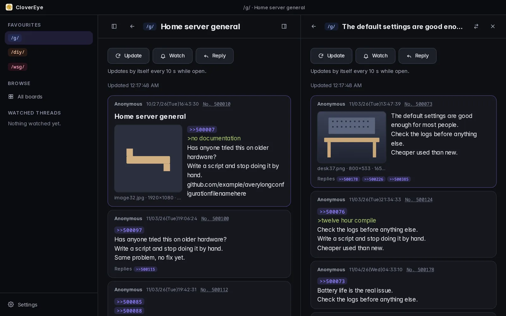
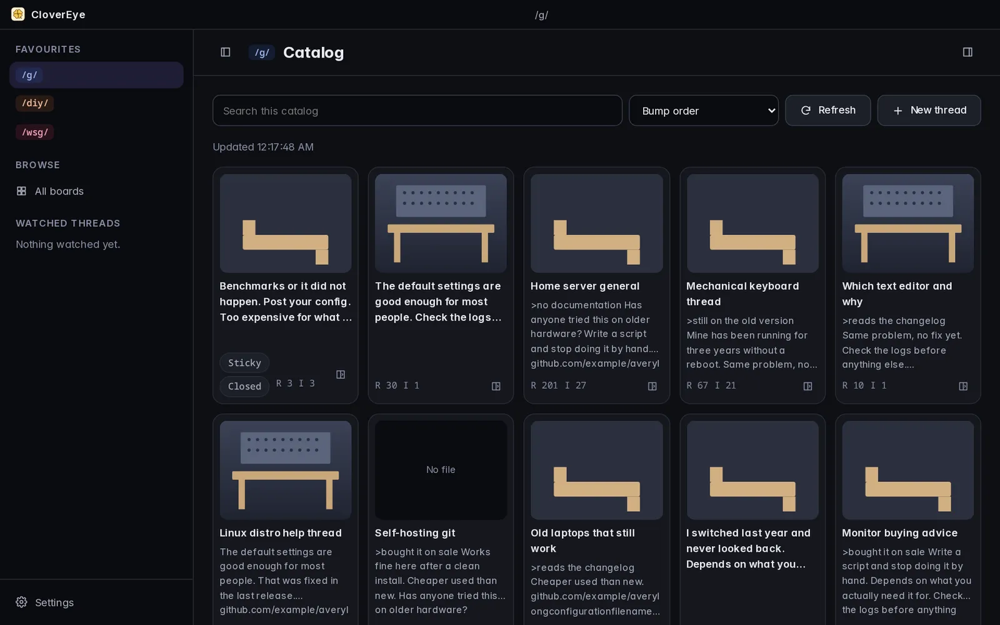
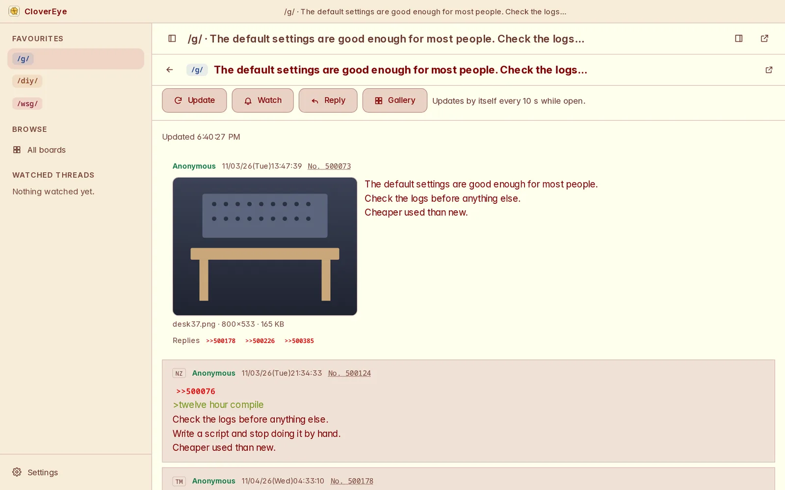
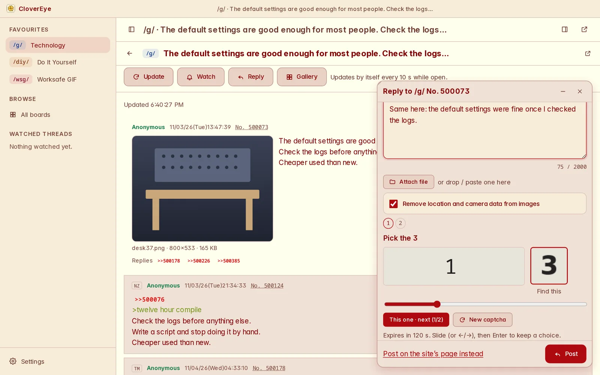
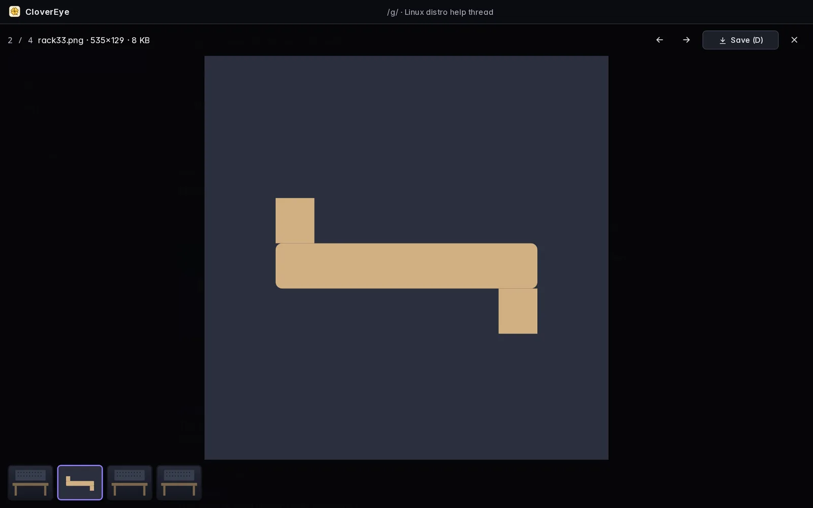

AI BloatCertified
CloverEye
CloverEye is an unofficial desktop client for 4chan: catalogs and threads in a clean, fast window, a thread watcher, and two threads side by side. Free software, made to be polite to the site.
Version 0.1.1 · Linux · Windows · macOS · AGPL-3.0
Fedora 44 and 45 get RPMs; any other x86-64 Linux gets one AppImage. Windows also has an MSI; both Windows installers add WebView2 if it is missing. Posting from the AppImage does not work yet: use the RPM, or the site's own page. The in-browser version runs on made-up sample posts and never contacts the site.
This page runs in your browser and sends nothing anywhere: no scripts from elsewhere, no fonts from elsewhere, no counters.





Screenshots of CloverEye showing sample posts made up for testing.